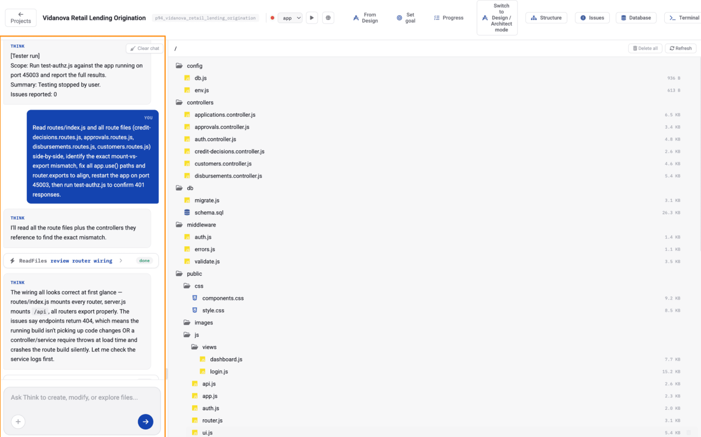
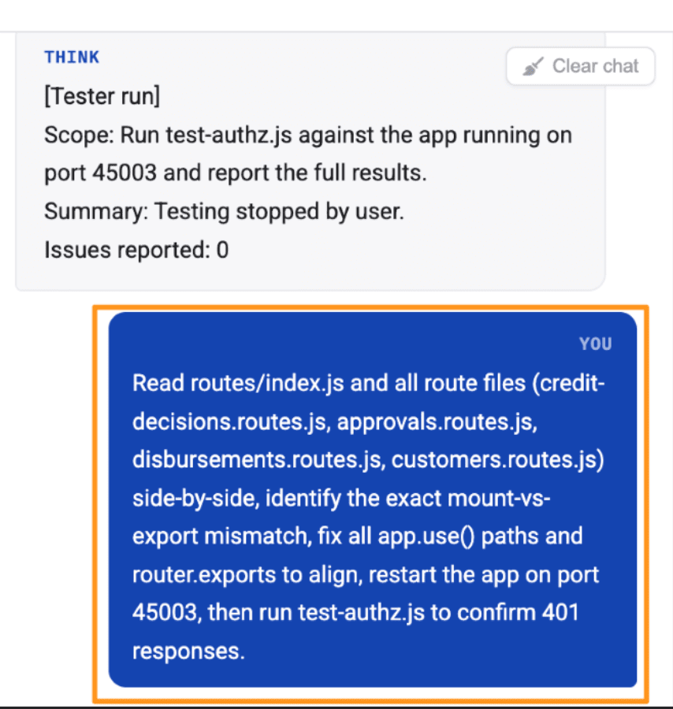
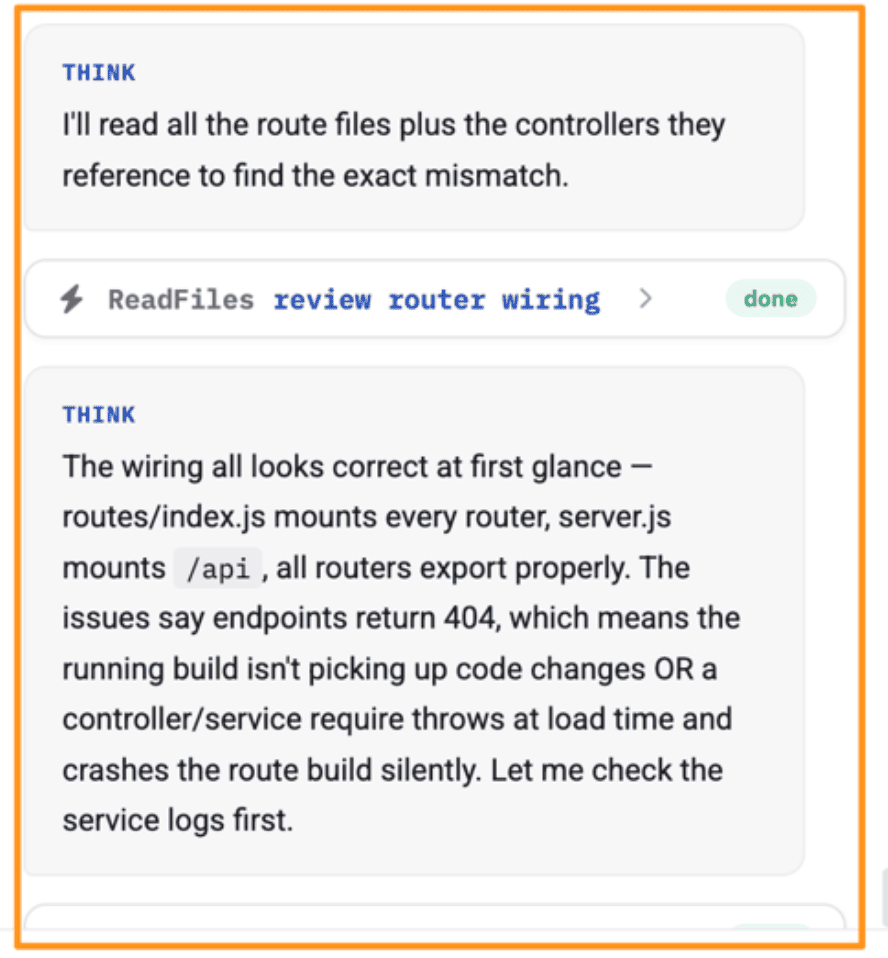
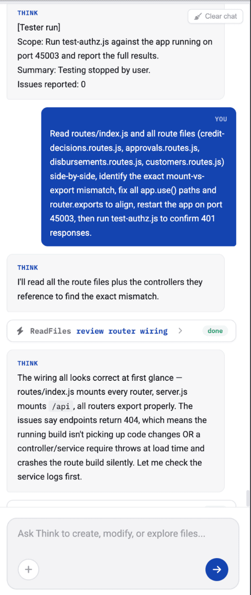

AI Assistant Panel
The left-side panel contains the integrated AI assistant named Think.
This panel is used for:
- Code assistance
- Debugging support
- Task automation
- System analysis
- Development guidance

Components of AI Assistant Panel:
A. Conversation Area
Displays interactions between the user and the AI assistant.
Examples include:
- Test execution summaries
- Route validation checks
- Error analysis
- Suggested fixes
- Development recommendations

B. User Instructions
User requests appear as highlighted in blue instruction blocks.
Typical requests may include:
- Reviewing route files
- Fixing export mismatches
- Restarting applications
- Running automated tests
C. AI Responses
AI-generated responses provide analysis, findings, and recommended actions.

The assistant may:
- Review project files
- Analyze logs
- Detect coding issues
- Recommend fixes
- Perform troubleshooting

D. Task Status Indicators
Status labels display the progress of AI tasks.
Common statuses:
- Done
- Running
- Review
E. AI Command Input
Located at the bottom of the AI panel.
Users may enter commands or requests such as:
- Create files
- Modify source code
- Explore project structure
- Investigate errors